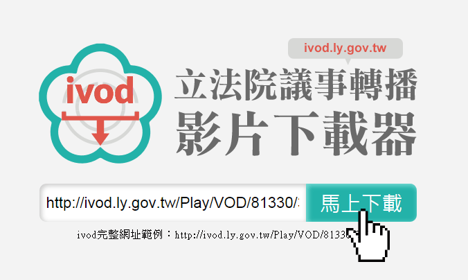
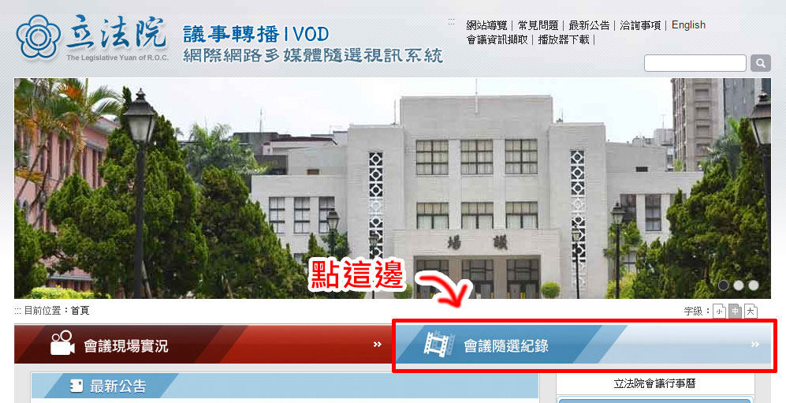
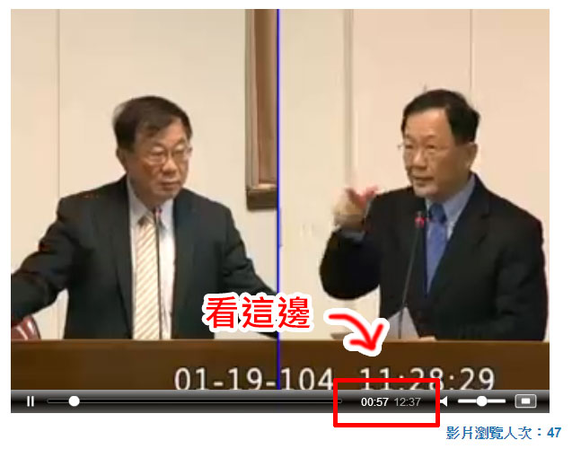
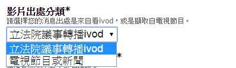

兵團操作教學說明
如何註冊成為國會調查兵團
- 先點選上方「加入兵團」
- 填寫註冊資料，設定email、密碼、暱稱。
- 回個人信箱收取email認證信。點擊認證連結。（認證信件可能會被判讀為垃圾信或廣告信，若沒有收到請到廣告信件夾或垃圾信或垃圾桶搜尋）
- 完成帳號註冊。
回報影片說明
- 先點選上方「登入」，輸入帳號密碼完成登入
- 登入後，上方會出現「回報立委資訊」的按鈕，點選後會顯示「回報立委資訊─請選擇要回報的類型」
- 點選「回報影片片段」，即可輸入資料。有*為必填項目。
- 確認必填項目都有填寫，按「確定送出」即完成回報
回報新聞說明
- 先點選上方「登入」，輸入帳號密碼完成登入
- 登入後，上方會出現「回報立委資訊」的按鈕，點選後會顯示「回報立委資訊─請選擇要回報的類型」
- 點選「回報新聞資訊」，即可輸入資料。有*為必填項目。
- 確認必填項目都有填寫，按「確定送出」即完成回報
回報發言紀錄說明
- 先點選上方「登入」，輸入帳號密碼完成登入
- 登入後，上方會出現「回報立委資訊」的按鈕，點選後會顯示「回報立委資訊─請選擇要回報的類型」
- 點選「回報發言紀錄」，即可輸入資料。有*為必填項目。
- 除了ivod，現在也可以直接回報議事錄內的資料囉！請用下拉選單選擇你要回報的類型，接著填寫對應的項目。
- 確認必填項目都有填寫，按「確定送出」即完成回報
什麼是立法院議事公報？
立法院的大大小小會議，資料都有電子化放在「立法院議事公報管理系統」，除了有出現在ivod的會議外，包含公報、議事錄等也都在其中。也就是說以立委的發言紀錄來說，議事公報的內容是最為詳細的。
我想剪影片，要如何下載立法院議事轉播ivod的影片？
- 連結到ivod下載工具網址: https://cic.musou.tw/
(註：本工具由國會無雙開發) - 貼入ivod的網址，接著按「馬上下載」
註：注意！ivod的網址結構為 http://ivod.ly.gov.tw/Play/VOD/78111/300K
或 http://ivod.ly.gov.tw/Play/Full/7959/300K
這兩種，這兩種以外的格式，是抓不到影片的喔！
ivod網址請上 http://ivod.ly.gov.tw/Legislator 選擇立法委員後，點選播放影片即可取得。
 - 稍微等待程式運作約10~15秒，接著影片就會直接下載到您的電腦裡面囉！格式為.ts的格式。
如何看ivod時間區間？
- 先進入立法院議事轉播ivod網站：http://ivod.ly.gov.tw/
- 點選「會議隨選紀錄」
- 選擇要看的立委姓名、影片後，點選「播放影片」
- 將滑鼠移到影片上，影片底下會顯示播放進度（滑鼠移走會隱藏），請記錄下你聽到的精采片段的開始與結束的時間，在回報資料時填寫即可。

可以回報新聞影片嗎？
可以，凡是跟立委有關的影片資料，包含ivod，新聞影片，電視影片都可以回報。步驟如下：
- 在回報立委資訊時，選擇「回報影片片段」。
- 在「影片出處分類＊」選擇「新聞影片」，只要您要回報的資料不屬於ivod，就都選擇新聞影片即可。
 - 填寫好其他必填資料後，按確認送出即可。